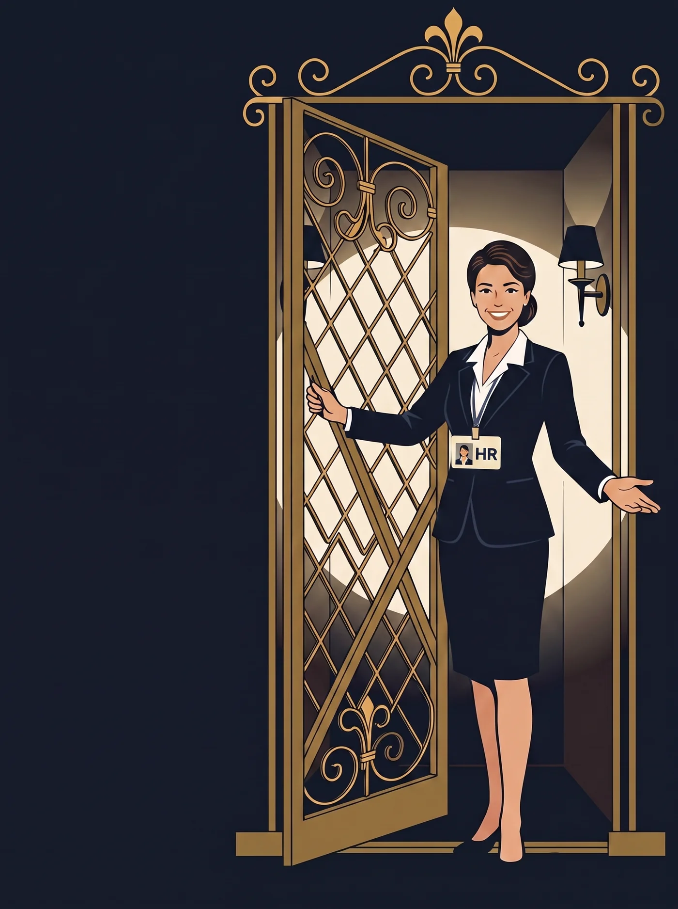
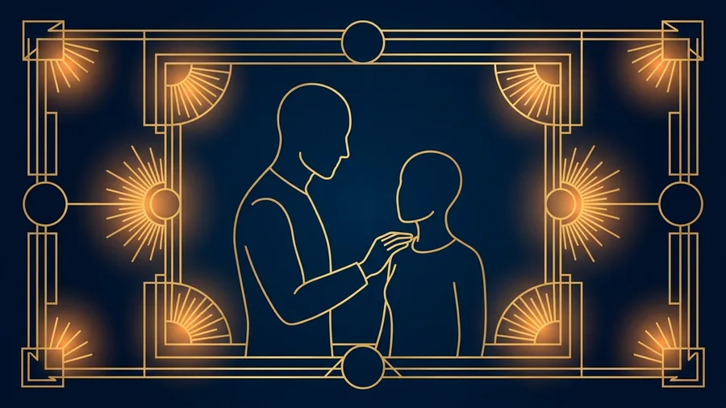

Проект до конца года · кодовое имя «Лифт»
ЛИФТ
Кабина, которая поднимает не строителей, а руководителей. Прозрачный путь от специалиста до позиции грейда 12+ — с понятными правилами на каждом этаже.
- Поручение
- Сформировать пул подготовленных преемников — внутренних кандидатов на позиции руководителей и сотрудников грейдов 12+, с соблюдением прозрачности условий и критериев отбора в резерв.
- Цель
- Защитить ключевые руководящие позиции и повысить вовлечённость сотрудников — через возможность самостоятельно выбрать движение по карьерной лестнице и войти в конкурс на позиции руководителей с дополнительным баллом или бонусом.
- Задача
- Создать кадровый резерв в ГО по ЛНР на позиции грейдов 12+.

Маршрут резерва
Весь путь — на одном табло
Девять этажей от заявки до кабинета руководителя. Секция подсвечивается сама — синхронно с тем, где вы находитесь при скролле.
Двери открываются для всех
Никаких закрытых списков и кулуарных решений. Условия участия — в рассылках, вопросы — на живых встречах с командой, вслух, а не заочно.
- Рассылки с условиями участия
- Встречи с сотрудниками
- Открытые вопрос-ответ сессии
Лифт считывает, куда вам нужно
Прежде чем ехать наверх, стоит понять — куда. Три инструмента смотрят на кандидата с разных сторон: готовность меняться, мотивация и AI-интервью по компетенциям — без человеческой предвзятости.
- «Потенциал к изменениям»
- «Мотивация»
- AI-интервью по компетенциям
Не анкета, а разговор о будущем
Кандидат сам нажимает кнопку. Заявка — это опыт, честный ответ на «почему я», короткое эссе об ожиданиях и выбор наставника — с объяснением, почему именно он.
- Данные и опыт кандидата
- Мотивационное эссе
- Выбор наставника
Тест плюс честная обратная связь
Тестирование и проверка управленческих навыков — с обратной связью в любом случае. Прошли — добро пожаловать в резерв. Не прошли — получаете точные рекомендации к следующей попытке.
- Проф. тестирование
- Управленческие навыки
- ОС по итогам отбора
Проводник, а не куратор для галочки
Наставника распределяют по реальной загрузке, а не для отчёта. 3–6 месяцев совместной работы — достаточно, чтобы разглядеть управленца, а не отрепетированную версию себя.
- Подбор с учётом загрузки
- 3–6 месяцев совместной работы

Маршрут под конкретного человека
Программы в Пульсе, график очных встреч с наставником и реальные проекты — вместо курса «для всех». План собирается под кандидата, а не кандидат подгоняется под шаблон.
- Программы в Пульсе
- Очные встречи
- Проекты в работе
Здесь заканчивается теория
Резервист учится изнутри: делегирование, тайм-менеджмент, обратная связь команде и лайфхаки наставника. Проекты, пилоты, демо-дни и замещение наставника — репетиция с реальными ставками, а не в аудитории.
- Делегирование и тайм-менеджмент
- Проекты и пилоты
- Демо-дни и замещение наставника
Решение принимает комиссия, не один человек
Итоговое тестирование — включение в резерв утверждает кадровая комиссия. «Готов сейчас» — можно назначать. «Готов в течение года» — не отказ, а уточнённый план и продолжение работы в резерве.
- Кадровая комиссия
- Статус «готов сейчас»
- Статус «готов в течение года»
Двери открываются на этаже руководителя
Когда открывается вакансия, резервист поднимается быстрее очереди. Дальше путь расходится на два — в зависимости от грейда.
Резерв — это не список ожидания. Это лифт, который действительно едет.
Вернуться в лобби